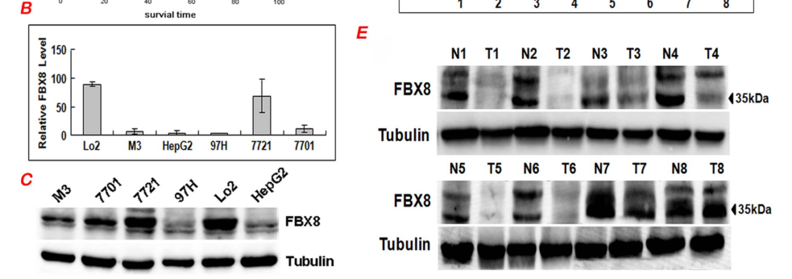

FBXO8 (F-box only protein 8; also FBS, FBX8, "F-box/SEC7 protein") is a 319 aa member of the F-box "other" (FBXO) family. Through its F-box domain (residues ~68-111) it binds SKP1 and serves as the substrate-recognition subunit of an SCF (SKP1-CUL1-F-box) / CRL1 E3 ubiquitin-protein ligase complex, in which the catalytic RING subunit is RBX1; F-box proteins such as FBXO8 confer substrate specificity rather than carrying catalytic ligase activity themselves. As an SCF receptor, FBXO8 recruits target proteins for poly-ubiquitination and proteasomal degradation; documented/reported substrates include the detoxification enzyme GSTP1 (FBXO8-mediated degradation linked to suppression of colorectal cancer progression), the small GTPase ARF6 (reported ubiquitination, with consequences for cell invasion), and the oncogenic transcription factor MYC (reported in breast cancer). FBXO8 generally behaves as a tumor suppressor: it is downregulated in hepatocellular carcinoma where low expression predicts worse survival and its re-expression suppresses proliferation, migration, invasion and lung metastasis. Distinctively among F-box proteins, FBXO8 also contains a C-terminal SEC7 domain (residues ~146-276), the module that in canonical ARF guanine-nucleotide exchange factors catalyzes GDP-to-GTP exchange; for FBXO8 the available evidence is most consistent with a Sec7-like domain that mediates ARF6 binding and plasma-membrane localization rather than demonstrated GEF catalysis (loss of FBXO8 confers resistance to the trafficking inhibitor brefeldin A). Through these activities FBXO8 sits at the interface of SCF-type ubiquitination and ARF6-dependent membrane trafficking and invasion. FBXO8 is broadly expressed across human tissues.
| GO Term | Evidence | Action | Reason |
|---|---|---|---|
|
GO:0005085
guanyl-nucleotide exchange factor activity
|
IEA
GO_REF:0000002 |
KEEP AS NON CORE |
Summary: InterPro/SEC7-based electronic assignment of guanine-nucleotide exchange factor activity. FBXO8 carries a SEC7 domain (residues 146-276) and UniProt records a predicted ("Potential") ARF GEF activity, but this is not experimentally demonstrated, and the core, experimentally supported role of FBXO8 is as an SCF substrate-recognition subunit.
Reason: Supported at the sequence level by a genuine SEC7 domain and a UniProt "Potential" GEF function, so not removed; however direct GEF catalysis has not been demonstrated. Falcon-sourced literature indicates the available functional evidence (ARF6 binding via the Sec7 domain, plasma-membrane localization, brefeldin A resistance on FBXO8 loss) is most consistent with a Sec7-like ARF6-interaction module rather than catalytic ARF guanine-nucleotide exchange. The activity therefore remains a predicted/unvalidated molecular function secondary to the documented SCF substrate-receptor role, and is kept as non-core rather than accepted as a core function.
Supporting Evidence:
file:human/FBXO8/FBXO8-uniprot.txt
May promote guanine-nucleotide exchange on an ARF. Promotes the activation of ARF through replacement of GDP with GTP (Potential).
file:human/FBXO8/FBXO8-deep-research-falcon.md
loss of FBXO8 renders cells resistant to the vesicular transport inhibitor brefeldin A, a phenotype noted as consistent with FBXO8 containing a Sec7-like domain. This is functional-genetic, not direct biochemical proof of GEF activity.
|
|
GO:0032012
regulation of ARF protein signal transduction
|
IEA
GO_REF:0000002 |
KEEP AS NON CORE |
Summary: InterPro-based electronic assignment of regulation of ARF protein signal transduction, derived from the SEC7 domain. Consistent with the predicted ARF-GEF activity of FBXO8 but, like that activity, sequence-inferred rather than experimentally established and peripheral to the core SCF role.
Reason: Plausible given the SEC7 domain and predicted ARF-activating function. While the original GOA support is purely electronic, Falcon-sourced literature adds genuine functional context: FBXO8 is reported to bind ARF6 via its Sec7 domain, localize to the plasma membrane, mediate ARF6 ubiquitination, and its loss confers brefeldin A resistance. This strengthens a real link between FBXO8 and ARF6-dependent membrane trafficking/invasion, but the evidence is most consistent with a Sec7-like ARF6-binding module rather than demonstrated GEF catalysis, and it remains peripheral to the core SCF substrate-receptor role, so it is kept as non-core.
Supporting Evidence:
file:human/FBXO8/FBXO8-uniprot.txt
May promote guanine-nucleotide exchange on an ARF. Promotes the activation of ARF through replacement of GDP with GTP (Potential).
file:human/FBXO8/FBXO8-deep-research-falcon.md
the SCF substrate receptor FBXO8 binds ARF6 via its Sec7 domain, localizes to the plasma membrane via its Sec7 and F-box domains, and mediates ARF6 ubiquitination; places FBXO8 at the interface of membrane trafficking and ubiquitin signaling.
|
|
GO:0005515
protein binding
|
IPI
PMID:31024008 FBX8 degrades GSTP1 through ubiquitination to suppress color... |
KEEP AS NON CORE |
Summary: IntAct-curated physical interaction with GSTP1, the FBXO8 substrate ubiquitinated for proteasomal degradation in colorectal cancer. A real and functionally meaningful interaction, but the bare "protein binding" term is uninformative per curation guidelines.
Reason: Records a genuine substrate interaction (FBXO8-GSTP1) underpinning the SCF degradation role, but bare protein binding does not convey the molecular function and is not a core annotation.
Supporting Evidence:
file:human/FBXO8/FBXO8-uniprot.txt
Q9NRD0; P09211: GSTP1; NbExp=3; IntAct=EBI-11615366, EBI-353467;
PMID:31024008
FBX8 directly targets GSTP1 for ubiquitin-mediated proteasome degradation in CRC.
|
|
GO:0000151
ubiquitin ligase complex
|
IEA
GO_REF:0000107 |
KEEP AS NON CORE |
Summary: Ortholog-based (Ensembl Compara) electronic assignment of membership in a ubiquitin ligase complex, transferred from the mouse ortholog. Correct but generic; the specific SCF complex term (GO:0019005) better captures the localization.
Reason: Accurate parent term (FBXO8 is part of an SCF/CRL1 E3 ligase complex) but subsumed by the more specific GO:0019005 SCF ubiquitin ligase complex annotation, which is the core localization.
Supporting Evidence:
PMID:31024008
F-box only protein 8 (FBX8), as a critical component of the SKP1-CUL1-F-box (SCF) E3 ubiquitin ligases
|
|
GO:0019005
SCF ubiquitin ligase complex
|
NAS
PMID:34445249 The SCF Complex Is Essential to Maintain Genome and Chromoso... |
ACCEPT |
Summary: ComplexPortal-curated (NAS) assignment of FBXO8 as part of the SCF ubiquitin ligase complex (CPX-7921, "SCF E3 ubiquitin ligase complex, FBXO8 variant"). This is the core localization: FBXO8 is the F-box substrate-recognition subunit of an SCF/CRL1 complex.
Reason: Core localization, well supported: FBXO8 contains an F-box domain, binds SKP1, and is a defined SCF complex variant in ComplexPortal; the literature describes it as a critical SCF component.
Supporting Evidence:
PMID:31024008
F-box only protein 8 (FBX8), as a critical component of the SKP1-CUL1-F-box (SCF) E3 ubiquitin ligases
file:human/FBXO8/FBXO8-uniprot.txt
ComplexPortal; CPX-7921; SCF E3 ubiquitin ligase complex, FBXO8 variant.
|
|
GO:0031146
SCF-dependent proteasomal ubiquitin-dependent protein catabolic process
|
NAS
PMID:34445249 The SCF Complex Is Essential to Maintain Genome and Chromoso... |
ACCEPT |
Summary: ComplexPortal-curated (NAS) assignment of involvement in SCF-dependent proteasomal ubiquitin-dependent protein catabolism. This is the core biological process: as the SCF substrate receptor, FBXO8 recruits targets (e.g. GSTP1) for SCF-mediated poly-ubiquitination and proteasomal degradation.
Reason: Core biological process, supported by the demonstrated FBXO8-driven ubiquitin-mediated proteasomal degradation of GSTP1 and by FBXO8's defined role as an SCF substrate-recognition subunit.
Supporting Evidence:
PMID:31024008
FBX8 directly targets GSTP1 for ubiquitin-mediated proteasome degradation in CRC.
PMID:34445249
SCF E3 ubiquitin ligase complexes that primarily modify protein substrates with poly-ubiquitin chains to target them for proteasomal degradation
|
|
GO:0000151
ubiquitin ligase complex
|
NAS
PMID:10945468 cDNA cloning and expression analysis of new members of the m... |
KEEP AS NON CORE |
Summary: UniProt-curated (NAS) assignment from the original F-box family cloning paper, which describes F-box proteins as components of the SCF ubiquitin-protein ligase complex. Correct but generic relative to the specific SCF complex term.
Reason: Accurate but generic parent term; subsumed by the more specific GO:0019005 SCF ubiquitin ligase complex annotation that captures the core localization.
Supporting Evidence:
PMID:10945468
F-box proteins are critical components of the SCF ubiquitin-protein ligase complex and are involved in substrate recognition and recruitment for ubiquitination and consequent degradation by the proteasome.
|
|
GO:0006511
ubiquitin-dependent protein catabolic process
|
NAS
PMID:10945468 cDNA cloning and expression analysis of new members of the m... |
KEEP AS NON CORE |
Summary: UniProt-curated (NAS) assignment of involvement in ubiquitin-dependent protein catabolism, from the F-box family cloning paper. Correct but generic; the specific GO:0031146 (SCF-dependent proteasomal degradation) better captures the core role.
Reason: Correct general process but redundant with and less precise than the specific SCF-dependent proteasomal catabolic process annotation, which is the core biological process.
Supporting Evidence:
PMID:10945468
involved in substrate recognition and recruitment for ubiquitination and consequent degradation by the proteasome
|
Q: Does the FBXO8 SEC7 domain catalyze ARF (ARF1/ARF6) guanine-nucleotide exchange, or does it act as a Sec7-like ARF6-binding/localization module that instead routes ARF6 for SCF-mediated ubiquitination? Resolving GEF catalysis versus ubiquitination is central to FBXO8's molecular function.
Q: Is ARF6 a bona fide direct SCF(FBXO8) ubiquitination substrate, and does FBXO8 thereby couple SCF-type ubiquitination to control of ARF6-dependent membrane trafficking, cell invasion, and metastasis suppression?
Q: Beyond GSTP1, ARF6 and the reported MYC, what is the full repertoire of FBXO8 SCF substrates, and what degrons or modifications govern FBXO8 substrate recognition given its non-canonical (Sec7-containing) architecture?
Experiment: Purify recombinant FBXO8 (or its isolated SEC7 domain) and assay ARF GDP/GTP exchange in vitro (e.g. fluorescent nucleotide-exchange assays with ARF1/ARF6) to directly test whether the predicted GEF activity is genuine; in parallel, map the FBXO8 Sec7-ARF6 interaction and assess ARF6 GTP-loading and trafficking (e.g. brefeldin A sensitivity, Golgi/plasma-membrane markers) upon FBXO8 depletion or overexpression.
Experiment: Reconstitute the FBXO8 SCF complex (SKP1-CUL1-RBX1-FBXO8) and perform in vitro ubiquitination of GSTP1 and ARF6, combined with cellular ubiquitinome/proteome profiling after FBXO8 knockout, to confirm direct adaptor function, test ARF6 as a substrate, and identify additional substrates such as MYC.
The research report should be a detailed narrative explaining the function, biological processes, and localization of the gene product. Citations should be given for all claims.
You should prioritize authoritative reviews and primary scientific literature when conducting research. You can supplement
this with annotations you find in gene/protein databases, but these can be outdated or inaccurate.
We are specifically interested in the primary function of the gene - for enzymes, what reaction is catalyzed, and what is the substrate specificity? For transporters, what is the substrate? For structural proteins or adapters, what is the broader structural role? For signaling molecules, what is the role in the pathway.
We are interested in where in or outside the cell the gene product carries out its function.
We are also interested in the signaling or biochemical pathways in which the gene functions. We are less interested in broad pleiotropic effects, except where these elucidate the precise role.
Include evidence where possible. We are interested in both experimental evidence as well as inference from structure, evolution, or bioinformatic analysis. Precise studies should be prioritized over high-throughput, where available.
The reviewed primary literature explicitly equates FBX8 with FBXO8 and describes it as an F-box protein containing an F-box domain plus a putative Sec7 domain, matching the target identity provided for human FBXO8 (UniProt Q9NRD0). (wang2013fbx8actsas pages 1-2)
F-box proteins are generally understood as substrate-recognition subunits within SKP1–CUL1–F-box (SCF) Cullin-RING E3 ubiquitin ligase complexes, conferring specificity to ubiquitination reactions that can regulate protein stability and signaling. This framework is directly invoked in the HCC study’s background rationale for FBXO8/FBX8. (wang2013fbx8actsas pages 1-2)
A Sec7 domain classically denotes a catalytic module found in ARF guanine nucleotide exchange factors (GEFs), but for FBXO8 the obtainable evidence is more consistent with a Sec7-like domain mediating ARF6 binding and trafficking-related phenotypes than with demonstrated GEF catalysis in the retrieved full texts. A secretory-pathway review summarizes that FBXO8 binds ARF6 via its Sec7 domain and can localize to the plasma membrane through its Sec7 and F-box domains. (lu2014acullinaryride pages 14-16)
The strongest mechanistic theme across the obtainable sources is that FBXO8 functions as an F-box protein linked to SCF biology and has been reported (in prior primary studies cited by an accessible paper) to possess E3 ligase activity mediating ubiquitination of the small GTPase ARF6, with consequences for invasion. In the accessible HCC paper, this ARF6 ubiquitination is described as prior published evidence rather than newly demonstrated in that paper. (wang2013fbx8actsas pages 1-2)
A trafficking-focused review further frames this as: FBXO8 binds ARF6 through its Sec7 domain and associates with the plasma membrane via its Sec7 and F-box domains (review-level statement). (lu2014acullinaryride pages 14-16)
A large chemical-genetic CRISPR screen of the ubiquitin pathway reports that FBXO8 loss renders cells resistant to brefeldin A, a vesicular transport inhibitor; the authors interpret this as consistent with FBXO8 having a Sec7-like domain. This is indirect functional evidence connecting FBXO8 to membrane/ARF–Golgi pathways, but it does not by itself establish direct Sec7 catalytic (GEF) activity. (hundley2021acomprehensivephenotypic pages 1-4, OpenTargets Search: -FBXO8)
Direct localization experiments were not available in the retrieved primary data excerpts. However, an authoritative review of cullin biology across the secretory pathway states that FBXO8 localizes to the plasma membrane via its Sec7 and F-box domains and binds ARF6 via its Sec7 domain. This supports a model in which FBXO8 functions at or near the cell cortex/plasma membrane to regulate ARF6-associated trafficking and signaling. (lu2014acullinaryride pages 14-16)
A primary HCC study (PLoS ONE; published 2013-06-27) provides the most detailed experimental evidence available in this run. The study examined 120 paraffin-embedded HCC tissues, plus matched fresh tissues and HCC cell lines, and performed gain-/loss-of-function experiments.
Key findings:
- FBXO8 is downregulated in HCC tissues and cell lines, and low FBXO8 protein is associated with worse patient survival. (wang2013fbx8actsas pages 1-2, wang2013fbx8actsas pages 3-5)
- In vitro: FBXO8 overexpression reduced proliferation, motility, and invasion; FBXO8 knockdown had opposite effects. (wang2013fbx8actsas pages 3-5)
- In vivo: In a tail-vein metastasis model, lung metastasis incidence was 67% (4/6) in mock vs 17% (1/6) in FBXO8-overexpressing group, with fewer metastatic lung nodules reported (P<0.05). (wang2013fbx8actsas pages 3-5, wang2013fbx8actsas media 5f15fba2, wang2013fbx8actsas media 862ac157)
These results support a tumor-suppressive role for FBXO8 in HCC, plausibly connected to ARF6-regulated invasive behavior (as framed by prior mechanistic literature cited in the paper). (wang2013fbx8actsas pages 1-2)
A 2023 review on metastatic dormancy includes FBXO8 among genes discussed in dormancy/EMT-related contexts (review-level claim). Because this contrasts with the HCC tumor-suppressor phenotype and the underlying primary source was not accessible here, this should be treated as hypothesis-generating rather than definitive functional annotation. (gelman2023thegenomicregulation pages 1-2)
Gelman (Cancer and Metastasis Reviews; final published form 2023-03) provides modern framing of dormancy pathways and includes FBXO8 in the discussion of dormancy-associated genomic programs (review-level mention). (gelman2023thegenomicregulation pages 1-2)
A 2025 review of ubiquitination in acute lymphoblastic leukemia (ALL) cites two 2024 disease-focused studies proposing FBXO8 as a biomarker and functional regulator:
- Breast cancer: “FBXO8 is a novel prognostic biomarker in different molecular subtypes of breast cancer and suppresses breast cancer progression by targeting c-MYC” (Biochim Biophys Acta Gen Subj. 2024; DOI: 10.1016/j.bbagen.2024.130577; URL: https://doi.org/10.1016/j.bbagen.2024.130577). (xian2025ubiquitinationandall pages 13-14)
- Kidney renal clear cell carcinoma: “Diagnostic and prognostic potential of FBXO8 expression in kidney renal clear cell carcinoma and its regulation of renal adenocarcinoma cells” (Cancer Genet. 2024; DOI: 10.1016/j.cancergen.2024.11.004; URL: https://doi.org/10.1016/j.cancergen.2024.11.004). (xian2025ubiquitinationandall pages 13-14)
Because the full texts for these 2024 studies were not obtainable in this run, quantitative statistics (e.g., hazard ratios, multivariable models) and mechanistic details cannot be reliably extracted here. (xian2025ubiquitinationandall pages 13-14)
Across the strongest accessible sources, FBXO8 is most consistently supported as:
- an F-box protein likely acting as an SCF substrate receptor; (wang2013fbx8actsas pages 1-2)
- functionally tied to ARF6-associated membrane trafficking/invasion biology, via reported ARF6 ubiquitination and review-level ARF6 binding/localization; (wang2013fbx8actsas pages 1-2, lu2014acullinaryride pages 14-16)
- a context-dependent regulator of tumor phenotypes (tumor suppressor in HCC), with other contexts suggested by more recent reviews and secondary citations. (wang2013fbx8actsas pages 3-5, gelman2023thegenomicregulation pages 1-2, xian2025ubiquitinationandall pages 13-14)
Although the Sec7 domain is classically catalytic in ARF-GEFs, the accessible evidence does not include direct biochemical demonstration of FBXO8 GEF activity. The most direct functional evidence available is a brefeldin A resistance phenotype and review-level ARF6 binding/localization statements, which are compatible with a Sec7-like interaction module but do not establish GEF catalysis. (OpenTargets Search: -FBXO8, lu2014acullinaryride pages 14-16)
HCC clinical and in vivo statistics (Wang et al., 2013-06-27):
- In IHC-scored HCC tissues: 83/106 (78.3%) low FBXO8 expression; 23/106 (21.7%) high expression. (wang2013fbx8actsas pages 3-5)
- Overall survival: low FBXO8 associated with worse survival (Kaplan–Meier P=0.002). (wang2013fbx8actsas pages 3-5)
- Metastasis model: lung metastasis in 67% (4/6) mock vs 17% (1/6) FBXO8 overexpression group. (wang2013fbx8actsas pages 3-5, wang2013fbx8actsas media 5f15fba2, wang2013fbx8actsas media 862ac157)
Open Targets disease-association snapshot (evidence aggregation):
Open Targets lists low-to-moderate association scores and evidence counts linking FBXO8 (ENSG00000164117) to phenotypes/diseases such as neurodegenerative disease, cataract, pericarditis, actinic keratosis, with supporting literature including PMIDs 34031600 and 39024449 in the retrieved snapshot. (OpenTargets Search: -FBXO8)
The following table compiles the main obtainable sources, dates, models, quantitative highlights, and URLs/DOIs.
| Study (first author year) | Publication date | System/model | Main finding about FBXO8 | Quantitative/statistical highlights | Relevance (molecular function/localization/disease) | URL/DOI |
|---|---|---|---|---|---|---|
| Wang 2013 | 2013-06-27 | Human hepatocellular carcinoma (HCC): 120 paraffin-embedded cases, 20 matched fresh tissues, 5 HCC cell lines, mouse xenograft/metastasis assays | Verified identity as human FBX8/FBXO8, an F-box protein with a putative Sec7 domain; reports prior evidence that FBX8 is a Skp1-binding protein with E3 ligase activity toward ARF6, and experimentally shows FBXO8 acts as a suppressor of HCC proliferation, migration, invasion, tumor growth, and lung metastasis. FBXO8 was downregulated in HCC tissues/cell lines and was an independent prognostic factor for survival. (wang2013fbx8actsas pages 1-2, wang2013fbx8actsas pages 3-5) | 83/106 HCC samples (78.3%) showed low FBX8 expression vs 23/106 (21.7%) high expression; lower FBX8 associated with worse 5-year survival (Kaplan-Meier, P=0.002); expression lower in HCC vs adjacent liver/cirrhotic liver (both P<0.001); correlation with differentiation (P=0.008) and serum AFP (P=0.005); in tail-vein metastasis model, lung metastasis in 67% (4/6) mock vs 17% (1/6) FBX8-overexpressing mice; fewer metastatic lung nodules and smaller tumors with FBX8 overexpression (P<0.05). (wang2013fbx8actsas pages 1-2, wang2013fbx8actsas pages 3-5, wang2013fbx8actsas media 5f15fba2, wang2013fbx8actsas media 862ac157) | Disease evidence strongest in HCC; supports tumor-suppressive role. Also anchors molecular-function discussion by linking FBXO8 to SCF/Skp1 and prior ARF6 ubiquitination literature. | https://doi.org/10.1371/journal.pone.0065495 |
| Lu & Pfeffer 2014 | 2014-07 | Review of secretory-pathway Cullin-RING ligases | Review states that the SCF substrate receptor FBXO8 binds ARF6 via its Sec7 domain, localizes to the plasma membrane via its Sec7 and F-box domains, and mediates ARF6 ubiquitination; places FBXO8 at the interface of membrane trafficking and ubiquitin signaling. (lu2014acullinaryride pages 14-16) | Review-level statement; no primary numerical data in the retrieved excerpt. (lu2014acullinaryride pages 14-16) | Key for inferred subcellular localization (plasma membrane) and mechanistic hypothesis that FBXO8 regulates ARF6-dependent trafficking/invasive behavior rather than acting as a canonical Sec7 GEF. | https://doi.org/10.1016/j.tcb.2014.02.001 |
| Hundley 2021 | 2021-03-18 | Human HAP1 CRISPR-Cas9 ubiquitin-pathway screen across 41 compounds | Genome-scale chemical-genetic screen found that loss of FBXO8 renders cells resistant to the vesicular transport inhibitor brefeldin A, a phenotype noted as consistent with FBXO8 containing a Sec7-like domain. This is functional-genetic, not direct biochemical proof of GEF activity. (OpenTargets Search: -FBXO8) | Global screen uncovered 466 gene-compound interactions covering 25% of interrogated E3s/DUBs; FBXO8 signal was specifically highlighted as brefeldin A resistance in the tool-derived relevant snippet, but no FBXO8-specific effect size was provided in the retrieved text. (OpenTargets Search: -FBXO8, hundley2021acomprehensivephenotypic pages 1-4) | Supports a trafficking-related role and compatibility of FBXO8 domain architecture with Golgi/ARF pathway biology; evidence is indirect and should not be overinterpreted as direct Sec7 catalytic activity. | https://doi.org/10.1016/j.molcel.2021.01.014 |
| Zhang 2022 | 2022-01-03 | Public-database analysis of FBXO family in pancreatic ductal adenocarcinoma (PDAC) | Establishes general context that FBXO proteins are substrate-recognition subunits of SCF E3 ligases involved in cancer pathways; notes that some FBXO members including FBXO8 have limited PDAC-focused study. In this paper, FBXO8 itself was not one of the six prioritized PDAC FBXOs. (zhang2022comprehensiveanalysisof pages 1-2) | Six prioritized FBXOs showed >40% genetic alterations/mutations in PDAC and associations with prognosis/immune infiltration, but these quantitative results were not FBXO8-specific. (zhang2022comprehensiveanalysisof pages 1-2) | Useful family-level context for current understanding of FBXO8 as an SCF-type substrate receptor; does not provide direct mechanistic FBXO8 evidence. | https://doi.org/10.3389/fimmu.2021.774435 |
| Gelman 2023 | 2023-03 | Review of metastatic dormancy genomics | Review-level claim states FBXO8 is an example of a protein that promotes dormancy by upregulating EMT and stem-like markers; this should be treated cautiously because it contrasts with the suppressor-of-invasion framing from HCC studies and the retrieved excerpt does not provide primary supporting data. (gelman2023thegenomicregulation pages 1-2, OpenTargets Search: -FBXO8) | No quantitative FBXO8-specific statistics in the retrieved excerpt. (gelman2023thegenomicregulation pages 1-2) | Potentially relevant to metastasis/dormancy biology, but currently lower-confidence than HCC experimental evidence; highlights context dependence and need to verify underlying primary source before strong annotation. | https://doi.org/10.1007/s10555-022-10076-w |
| Open Targets summary | Accessed from current Open Targets snapshot in tool output (date not stated in output) | Curated disease-target evidence aggregation for human FBXO8/ENSG00000164117 | Open Targets lists low-to-moderate evidence links between FBXO8 and several diseases/phenotypes, with supporting literature/study IDs rather than mechanistic annotation. Top listed associations in the retrieved output were actinic keratosis, neurodegenerative disease, pericarditis, precordial pain, and cataract. (OpenTargets Search: -FBXO8) | Evidence sizes were 2 for each listed disease in the retrieved output; example association scores: neurodegenerative disease 0.231, precordial pain 0.171, cataract 0.167, pericarditis 0.128, actinic keratosis 0.127. Supporting literature IDs in the output included PMID 34031600 and PMID 39024449. (OpenTargets Search: -FBXO8) | Helpful for disease landscape scanning, but evidence is indirect/aggregated and does not itself define molecular function or localization. | https://platform.opentargets.org/target/ENSG00000164117 |
Table: This table compiles the most relevant retrieved evidence for human FBXO8/Q9NRD0, separating direct experimental findings from review-level or database-level inferences. It is useful for distinguishing well-supported roles in ARF6-related trafficking and cancer suppression from more tentative disease associations and recent contextual claims.
References
(wang2013fbx8actsas pages 1-2): Feifei Wang, Yudan Qiao, Jiang Yu, Xiaoli Ren, Jianmei Wang, Yi Ding, Xiaojing Zhang, Wenhui Ma, Yanqing Ding, and Li Liang. Fbx8 acts as an invasion and metastasis suppressor and correlates with poor survival in hepatocellular carcinoma. PLoS ONE, 8:e65495, Jun 2013. URL: https://doi.org/10.1371/journal.pone.0065495, doi:10.1371/journal.pone.0065495. This article has 25 citations and is from a peer-reviewed journal.
(lu2014acullinaryride pages 14-16): Albert Lu and Suzanne R. Pfeffer. A cullinary ride across the secretory pathway: more than just secretion. Trends in cell biology, 24 7:389-99, Jul 2014. URL: https://doi.org/10.1016/j.tcb.2014.02.001, doi:10.1016/j.tcb.2014.02.001. This article has 35 citations and is from a domain leading peer-reviewed journal.
(hundley2021acomprehensivephenotypic pages 1-4): Frances V. Hundley, Nerea Sanvisens Delgado, Harold C. Marin, Kaili L. Carr, Ruilin Tian, and David P. Toczyski. A comprehensive phenotypic crispr-cas9 screen of the ubiquitin pathway uncovers roles of ubiquitin ligases in mitosis. Molecular Cell, 81:1319-1336.e9, Mar 2021. URL: https://doi.org/10.1016/j.molcel.2021.01.014, doi:10.1016/j.molcel.2021.01.014. This article has 56 citations and is from a highest quality peer-reviewed journal.
(OpenTargets Search: -FBXO8): Open Targets Query (-FBXO8, 5 results). Buniello, A. et al. (2025). Open Targets Platform: facilitating therapeutic hypotheses building in drug discovery. Nucleic Acids Research.
(wang2013fbx8actsas pages 3-5): Feifei Wang, Yudan Qiao, Jiang Yu, Xiaoli Ren, Jianmei Wang, Yi Ding, Xiaojing Zhang, Wenhui Ma, Yanqing Ding, and Li Liang. Fbx8 acts as an invasion and metastasis suppressor and correlates with poor survival in hepatocellular carcinoma. PLoS ONE, 8:e65495, Jun 2013. URL: https://doi.org/10.1371/journal.pone.0065495, doi:10.1371/journal.pone.0065495. This article has 25 citations and is from a peer-reviewed journal.
(wang2013fbx8actsas media 5f15fba2): Feifei Wang, Yudan Qiao, Jiang Yu, Xiaoli Ren, Jianmei Wang, Yi Ding, Xiaojing Zhang, Wenhui Ma, Yanqing Ding, and Li Liang. Fbx8 acts as an invasion and metastasis suppressor and correlates with poor survival in hepatocellular carcinoma. PLoS ONE, 8:e65495, Jun 2013. URL: https://doi.org/10.1371/journal.pone.0065495, doi:10.1371/journal.pone.0065495. This article has 25 citations and is from a peer-reviewed journal.
(wang2013fbx8actsas media 862ac157): Feifei Wang, Yudan Qiao, Jiang Yu, Xiaoli Ren, Jianmei Wang, Yi Ding, Xiaojing Zhang, Wenhui Ma, Yanqing Ding, and Li Liang. Fbx8 acts as an invasion and metastasis suppressor and correlates with poor survival in hepatocellular carcinoma. PLoS ONE, 8:e65495, Jun 2013. URL: https://doi.org/10.1371/journal.pone.0065495, doi:10.1371/journal.pone.0065495. This article has 25 citations and is from a peer-reviewed journal.
(gelman2023thegenomicregulation pages 1-2): Irwin H. Gelman. The genomic regulation of metastatic dormancy. Cancer and Metastasis Reviews, 42:255-276, Jan 2023. URL: https://doi.org/10.1007/s10555-022-10076-w, doi:10.1007/s10555-022-10076-w. This article has 7 citations and is from a peer-reviewed journal.
(xian2025ubiquitinationandall pages 13-14): Wei Xian, Yinting Chen, Shuiqing Yu, Zhitao Ye, Yu Zhang, and Danlin Yao. Ubiquitination and all: identifying fbxo8 as a prognostic biomarker and therapeutic target. Frontiers in Immunology, May 2025. URL: https://doi.org/10.3389/fimmu.2025.1554231, doi:10.3389/fimmu.2025.1554231. This article has 1 citations and is from a peer-reviewed journal.
(zhang2022comprehensiveanalysisof pages 1-2): Yalu Zhang, Qiaofei Liu, Ming Cui, Mengyi Wang, Surong Hua, Junyi Gao, and Quan Liao. Comprehensive analysis of expression, prognostic value, and immune infiltration for ubiquitination-related fbxos in pancreatic ductal adenocarcinoma. Frontiers in Immunology, Jan 2022. URL: https://doi.org/10.3389/fimmu.2021.774435, doi:10.3389/fimmu.2021.774435. This article has 19 citations and is from a peer-reviewed journal.

core_functions, not as a NEW existing_annotation. Validated protein substrate exists (GSTP1, PMID:31024008), so this is not a substrate-less F-box.UPS|E3 ubiquitin and UBL ligases|Cul1 substrate receptor|F-box|other ; PN-node mapping: subtype/type no_mapping; group Cul1 substrate receptor=mapped / ok_for_propagation_to_go → GO:1990756 ubiquitin-like ligase-substrate adaptor activity (new_to_goa); class context_only/too_broad (GO:0061630).core_functions, not as a NEW existing_annotation. Validated protein substrate exists (GSTP1, PMID:31024008), so this is not a substrate-less F-box.existing_annotation (MF) to make the adaptor activity an explicit annotation, not only a core_functions entry (FBXO8 currently has no curated SCF-adaptor MF in GOA; the only MF is the IEA GEF term, kept non-core). [MAP] none.This file is generated from the current PROTEOSTASIS phase-1 dossier and local gene-review artifacts. Edit the source review, PN mapping, or dossier rather than this generated note when correcting the underlying curation.
id: Q9NRD0
gene_symbol: FBXO8
product_type: PROTEIN
status: COMPLETE
taxon:
id: NCBITaxon:9606
label: Homo sapiens
description: >-
FBXO8 (F-box only protein 8; also FBS, FBX8, "F-box/SEC7 protein") is a 319 aa
member of the F-box "other" (FBXO) family. Through its F-box domain (residues
~68-111) it binds SKP1 and serves as the substrate-recognition subunit of an
SCF (SKP1-CUL1-F-box) / CRL1 E3 ubiquitin-protein ligase complex, in which the
catalytic RING subunit is RBX1; F-box proteins such as FBXO8 confer substrate
specificity rather than carrying catalytic ligase activity themselves. As an
SCF receptor, FBXO8 recruits target proteins for poly-ubiquitination and
proteasomal degradation; documented/reported substrates include the
detoxification enzyme GSTP1 (FBXO8-mediated degradation linked to suppression of
colorectal cancer progression), the small GTPase ARF6 (reported ubiquitination,
with consequences for cell invasion), and the oncogenic transcription factor MYC
(reported in breast cancer). FBXO8 generally behaves as a tumor suppressor: it
is downregulated in hepatocellular carcinoma where low expression predicts worse
survival and its re-expression suppresses proliferation, migration, invasion and
lung metastasis. Distinctively among F-box proteins, FBXO8 also contains a
C-terminal SEC7 domain (residues ~146-276), the module that in canonical ARF
guanine-nucleotide exchange factors catalyzes GDP-to-GTP exchange; for FBXO8 the
available evidence is most consistent with a Sec7-like domain that mediates ARF6
binding and plasma-membrane localization rather than demonstrated GEF catalysis
(loss of FBXO8 confers resistance to the trafficking inhibitor brefeldin A).
Through these activities FBXO8 sits at the interface of SCF-type ubiquitination
and ARF6-dependent membrane trafficking and invasion. FBXO8 is broadly expressed
across human tissues.
alternative_products:
- name: '1'
id: Q9NRD0-1
- name: '2'
id: Q9NRD0-2
sequence_note: VSP_055885
existing_annotations:
- term:
id: GO:0005085
label: guanyl-nucleotide exchange factor activity
evidence_type: IEA
original_reference_id: GO_REF:0000002
qualifier: enables
review:
summary: >-
InterPro/SEC7-based electronic assignment of guanine-nucleotide exchange
factor activity. FBXO8 carries a SEC7 domain (residues 146-276) and UniProt
records a predicted ("Potential") ARF GEF activity, but this is not
experimentally demonstrated, and the core, experimentally supported role of
FBXO8 is as an SCF substrate-recognition subunit.
action: KEEP_AS_NON_CORE
reason: >-
Supported at the sequence level by a genuine SEC7 domain and a UniProt
"Potential" GEF function, so not removed; however direct GEF catalysis has
not been demonstrated. Falcon-sourced literature indicates the available
functional evidence (ARF6 binding via the Sec7 domain, plasma-membrane
localization, brefeldin A resistance on FBXO8 loss) is most consistent with a
Sec7-like ARF6-interaction module rather than catalytic ARF guanine-nucleotide
exchange. The activity therefore remains a predicted/unvalidated molecular
function secondary to the documented SCF substrate-receptor role, and is kept
as non-core rather than accepted as a core function.
supported_by:
- reference_id: file:human/FBXO8/FBXO8-uniprot.txt
supporting_text: "May promote guanine-nucleotide exchange on an ARF. Promotes the activation of ARF through replacement of GDP with GTP (Potential)."
- reference_id: file:human/FBXO8/FBXO8-deep-research-falcon.md
supporting_text: loss of FBXO8 renders cells resistant to the vesicular transport inhibitor brefeldin A, a phenotype noted as consistent with FBXO8 containing a Sec7-like domain. This is functional-genetic, not direct biochemical proof of GEF activity.
- term:
id: GO:0032012
label: regulation of ARF protein signal transduction
evidence_type: IEA
original_reference_id: GO_REF:0000002
qualifier: involved_in
review:
summary: >-
InterPro-based electronic assignment of regulation of ARF protein signal
transduction, derived from the SEC7 domain. Consistent with the predicted
ARF-GEF activity of FBXO8 but, like that activity, sequence-inferred rather
than experimentally established and peripheral to the core SCF role.
action: KEEP_AS_NON_CORE
reason: >-
Plausible given the SEC7 domain and predicted ARF-activating function. While
the original GOA support is purely electronic, Falcon-sourced literature adds
genuine functional context: FBXO8 is reported to bind ARF6 via its Sec7
domain, localize to the plasma membrane, mediate ARF6 ubiquitination, and its
loss confers brefeldin A resistance. This strengthens a real link between
FBXO8 and ARF6-dependent membrane trafficking/invasion, but the evidence is
most consistent with a Sec7-like ARF6-binding module rather than demonstrated
GEF catalysis, and it remains peripheral to the core SCF substrate-receptor
role, so it is kept as non-core.
supported_by:
- reference_id: file:human/FBXO8/FBXO8-uniprot.txt
supporting_text: "May promote guanine-nucleotide exchange on an ARF. Promotes the activation of ARF through replacement of GDP with GTP (Potential)."
- reference_id: file:human/FBXO8/FBXO8-deep-research-falcon.md
supporting_text: the SCF substrate receptor FBXO8 binds ARF6 via its Sec7 domain, localizes to the plasma membrane via its Sec7 and F-box domains, and mediates ARF6 ubiquitination; places FBXO8 at the interface of membrane trafficking and ubiquitin signaling.
- term:
id: GO:0005515
label: protein binding
evidence_type: IPI
original_reference_id: PMID:31024008
qualifier: enables
review:
summary: >-
IntAct-curated physical interaction with GSTP1, the FBXO8 substrate
ubiquitinated for proteasomal degradation in colorectal cancer. A real and
functionally meaningful interaction, but the bare "protein binding" term is
uninformative per curation guidelines.
action: KEEP_AS_NON_CORE
reason: >-
Records a genuine substrate interaction (FBXO8-GSTP1) underpinning the SCF
degradation role, but bare protein binding does not convey the molecular
function and is not a core annotation.
supported_by:
- reference_id: file:human/FBXO8/FBXO8-uniprot.txt
supporting_text: "Q9NRD0; P09211: GSTP1; NbExp=3; IntAct=EBI-11615366, EBI-353467;"
- reference_id: PMID:31024008
supporting_text: "FBX8 directly targets GSTP1 for ubiquitin-mediated proteasome degradation in CRC."
- term:
id: GO:0000151
label: ubiquitin ligase complex
evidence_type: IEA
original_reference_id: GO_REF:0000107
qualifier: part_of
review:
summary: >-
Ortholog-based (Ensembl Compara) electronic assignment of membership in a
ubiquitin ligase complex, transferred from the mouse ortholog. Correct but
generic; the specific SCF complex term (GO:0019005) better captures the
localization.
action: KEEP_AS_NON_CORE
reason: >-
Accurate parent term (FBXO8 is part of an SCF/CRL1 E3 ligase complex) but
subsumed by the more specific GO:0019005 SCF ubiquitin ligase complex
annotation, which is the core localization.
supported_by:
- reference_id: PMID:31024008
supporting_text: "F-box only protein 8 (FBX8), as a critical component of the SKP1-CUL1-F-box (SCF) E3 ubiquitin ligases"
- term:
id: GO:0019005
label: SCF ubiquitin ligase complex
evidence_type: NAS
original_reference_id: PMID:34445249
qualifier: part_of
review:
summary: >-
ComplexPortal-curated (NAS) assignment of FBXO8 as part of the SCF
ubiquitin ligase complex (CPX-7921, "SCF E3 ubiquitin ligase complex, FBXO8
variant"). This is the core localization: FBXO8 is the F-box
substrate-recognition subunit of an SCF/CRL1 complex.
action: ACCEPT
reason: >-
Core localization, well supported: FBXO8 contains an F-box domain, binds
SKP1, and is a defined SCF complex variant in ComplexPortal; the literature
describes it as a critical SCF component.
supported_by:
- reference_id: PMID:31024008
supporting_text: "F-box only protein 8 (FBX8), as a critical component of the SKP1-CUL1-F-box (SCF) E3 ubiquitin ligases"
- reference_id: file:human/FBXO8/FBXO8-uniprot.txt
supporting_text: "ComplexPortal; CPX-7921; SCF E3 ubiquitin ligase complex, FBXO8 variant."
- term:
id: GO:0031146
label: SCF-dependent proteasomal ubiquitin-dependent protein catabolic process
evidence_type: NAS
original_reference_id: PMID:34445249
qualifier: involved_in
review:
summary: >-
ComplexPortal-curated (NAS) assignment of involvement in SCF-dependent
proteasomal ubiquitin-dependent protein catabolism. This is the core
biological process: as the SCF substrate receptor, FBXO8 recruits targets
(e.g. GSTP1) for SCF-mediated poly-ubiquitination and proteasomal
degradation.
action: ACCEPT
reason: >-
Core biological process, supported by the demonstrated FBXO8-driven
ubiquitin-mediated proteasomal degradation of GSTP1 and by FBXO8's defined
role as an SCF substrate-recognition subunit.
supported_by:
- reference_id: PMID:31024008
supporting_text: "FBX8 directly targets GSTP1 for ubiquitin-mediated proteasome degradation in CRC."
- reference_id: PMID:34445249
supporting_text: "SCF E3 ubiquitin ligase complexes that primarily modify protein substrates with poly-ubiquitin chains to target them for proteasomal degradation"
- term:
id: GO:0000151
label: ubiquitin ligase complex
evidence_type: NAS
original_reference_id: PMID:10945468
qualifier: part_of
review:
summary: >-
UniProt-curated (NAS) assignment from the original F-box family cloning
paper, which describes F-box proteins as components of the SCF
ubiquitin-protein ligase complex. Correct but generic relative to the
specific SCF complex term.
action: KEEP_AS_NON_CORE
reason: >-
Accurate but generic parent term; subsumed by the more specific GO:0019005
SCF ubiquitin ligase complex annotation that captures the core localization.
supported_by:
- reference_id: PMID:10945468
supporting_text: "F-box proteins are critical components of the SCF ubiquitin-protein ligase complex and are involved in substrate recognition and recruitment for ubiquitination and consequent degradation by the proteasome."
- term:
id: GO:0006511
label: ubiquitin-dependent protein catabolic process
evidence_type: NAS
original_reference_id: PMID:10945468
qualifier: involved_in
review:
summary: >-
UniProt-curated (NAS) assignment of involvement in ubiquitin-dependent
protein catabolism, from the F-box family cloning paper. Correct but generic;
the specific GO:0031146 (SCF-dependent proteasomal degradation) better
captures the core role.
action: KEEP_AS_NON_CORE
reason: >-
Correct general process but redundant with and less precise than the
specific SCF-dependent proteasomal catabolic process annotation, which is
the core biological process.
supported_by:
- reference_id: PMID:10945468
supporting_text: "involved in substrate recognition and recruitment for ubiquitination and consequent degradation by the proteasome"
references:
- id: GO_REF:0000002
title: Gene Ontology annotation through association of InterPro records with GO terms
findings: []
- id: GO_REF:0000107
title: Automatic transfer of experimentally verified manual GO annotation data to orthologs using Ensembl Compara
findings: []
- id: PMID:10945468
title: cDNA cloning and expression analysis of new members of the mammalian F-box protein family.
findings:
- statement: FBS/FBXO8 is one of a family of mammalian F-box proteins; F-box proteins are components of the SCF ubiquitin-protein ligase complex and function in substrate recognition for ubiquitination and proteasomal degradation. FBS uniquely contains a Sec7 domain.
reference_section_type: ABSTRACT
reference_review:
relevance: MEDIUM
correctness: VERIFIED
review_notes: >-
Abstract-only. Original cloning paper establishing FBXO8/FBS as an F-box
family member with a Sec7 domain; source of the NAS ubiquitin ligase complex
and ubiquitin-dependent catabolism annotations.
- id: PMID:31024008
title: FBX8 degrades GSTP1 through ubiquitination to suppress colorectal cancer progression.
findings:
- statement: FBX8/FBXO8 is a critical component of the SCF (SKP1-CUL1-F-box) E3 ubiquitin ligase and directly targets GSTP1 for ubiquitin-mediated proteasomal degradation; loss of FBX8 accelerates colon tumorigenesis and correlates with increased GSTP1 stability.
reference_section_type: ABSTRACT
reference_review:
relevance: HIGH
correctness: VERIFIED
review_notes: >-
Abstract-only (full_text_available: false). Establishes a specific FBXO8 SCF
substrate (GSTP1) and the core SCF-dependent degradation function; source of
the IntAct GSTP1 protein-binding annotation.
- id: PMID:34445249
title: The SCF Complex Is Essential to Maintain Genome and Chromosome Stability.
findings:
- statement: The SCF complex comprises ~69 SKP1-CUL1-F-box E3 ubiquitin ligase complexes distinguished by variable F-box proteins (substrate specificity), which poly-ubiquitinate substrates for proteasomal degradation.
reference_section_type: ABSTRACT
reference_review:
relevance: MEDIUM
correctness: VERIFIED
review_notes: >-
Abstract-only review of SCF complex biology used by ComplexPortal as the NAS
basis for the SCF complex and SCF-dependent catabolic process annotations.
- id: file:human/FBXO8/FBXO8-deep-research-falcon.md
title: Falcon deep research report for human FBXO8
findings:
- statement: FBXO8 is an F-box/SCF substrate receptor functionally tied to ARF6-associated membrane trafficking and invasion, reported to bind ARF6 via its Sec7 domain, localize to the plasma membrane, and mediate ARF6 ubiquitination.
supporting_text: the SCF substrate receptor FBXO8 binds ARF6 via its Sec7 domain, localizes to the plasma membrane via its Sec7 and F-box domains, and mediates ARF6 ubiquitination; places FBXO8 at the interface of membrane trafficking and ubiquitin signaling.
- statement: The available evidence supports a Sec7-like ARF6-binding/localization module rather than demonstrated Sec7 GEF catalysis for FBXO8; loss of FBXO8 confers resistance to the vesicular-transport inhibitor brefeldin A.
supporting_text: loss of FBXO8 renders cells resistant to the vesicular transport inhibitor brefeldin A, a phenotype noted as consistent with FBXO8 containing a Sec7-like domain. This is functional-genetic, not direct biochemical proof of GEF activity.
- statement: FBXO8 acts as a tumor suppressor in hepatocellular carcinoma, where it is downregulated, predicts worse survival, and suppresses proliferation, migration, invasion and lung metastasis on re-expression.
supporting_text: FBXO8 acts as a suppressor of HCC proliferation, migration, invasion, tumor growth, and lung metastasis. FBXO8 was downregulated in HCC tissues/cell lines and was an independent prognostic factor for survival.
reference_review:
relevance: HIGH
correctness: UNVERIFIED
review_notes: >-
Falcon synthesis anchored on Wang et al. 2013 (PLoS ONE,
doi:10.1371/journal.pone.0065495; HCC tumor suppression), Lu & Pfeffer 2014
(Trends Cell Biol, doi:10.1016/j.tcb.2014.02.001; ARF6/Sec7/plasma-membrane
review), and Hundley et al. 2021 (Mol Cell, doi:10.1016/j.molcel.2021.01.014;
brefeldin A CRISPR screen). These independently corroborate the predicted
SEC7/ARF link in UniProt and add functional context (ARF6 binding/
ubiquitination, plasma-membrane localization, BFA resistance) beyond the
GSTP1-centric experimental record (PMID:31024008). Falcon cites
author-year/DOIs not PMIDs and the papers are not in the local cache; the
ARF6/c-MYC substrate claims are reported (sometimes review-level) and treated
as leads (UNVERIFIED) rather than independently verified.
core_functions:
- description: >-
Substrate-recognition (F-box) subunit of an SCF (SKP1-CUL1-RBX1-F-box) / CRL1
E3 ubiquitin ligase complex that binds specific target proteins (e.g. GSTP1)
via its substrate-binding region and, through F-box-SKP1 association, presents
them for poly-ubiquitination by the complex and subsequent proteasomal
degradation. FBXO8 confers substrate specificity rather than carrying
catalytic ligase activity itself (the catalytic RING subunit is RBX1).
molecular_function:
id: GO:1990756
label: ubiquitin-like ligase-substrate adaptor activity
directly_involved_in:
- id: GO:0031146
label: SCF-dependent proteasomal ubiquitin-dependent protein catabolic process
in_complex:
id: GO:0019005
label: SCF ubiquitin ligase complex
supported_by:
- reference_id: PMID:31024008
supporting_text: "F-box only protein 8 (FBX8), as a critical component of the SKP1-CUL1-F-box (SCF) E3 ubiquitin ligases"
- reference_id: PMID:31024008
supporting_text: "FBX8 directly targets GSTP1 for ubiquitin-mediated proteasome degradation in CRC."
proposed_new_terms: []
suggested_questions:
- question: Does the FBXO8 SEC7 domain catalyze ARF (ARF1/ARF6) guanine-nucleotide exchange, or does it act as a Sec7-like ARF6-binding/localization module that instead routes ARF6 for SCF-mediated ubiquitination? Resolving GEF catalysis versus ubiquitination is central to FBXO8's molecular function.
- question: Is ARF6 a bona fide direct SCF(FBXO8) ubiquitination substrate, and does FBXO8 thereby couple SCF-type ubiquitination to control of ARF6-dependent membrane trafficking, cell invasion, and metastasis suppression?
- question: Beyond GSTP1, ARF6 and the reported MYC, what is the full repertoire of FBXO8 SCF substrates, and what degrons or modifications govern FBXO8 substrate recognition given its non-canonical (Sec7-containing) architecture?
suggested_experiments:
- description: >-
Purify recombinant FBXO8 (or its isolated SEC7 domain) and assay ARF GDP/GTP
exchange in vitro (e.g. fluorescent nucleotide-exchange assays with ARF1/ARF6)
to directly test whether the predicted GEF activity is genuine; in parallel, map
the FBXO8 Sec7-ARF6 interaction and assess ARF6 GTP-loading and trafficking
(e.g. brefeldin A sensitivity, Golgi/plasma-membrane markers) upon FBXO8
depletion or overexpression.
- description: >-
Reconstitute the FBXO8 SCF complex (SKP1-CUL1-RBX1-FBXO8) and perform in vitro
ubiquitination of GSTP1 and ARF6, combined with cellular ubiquitinome/proteome
profiling after FBXO8 knockout, to confirm direct adaptor function, test ARF6 as
a substrate, and identify additional substrates such as MYC.
{kind=link}